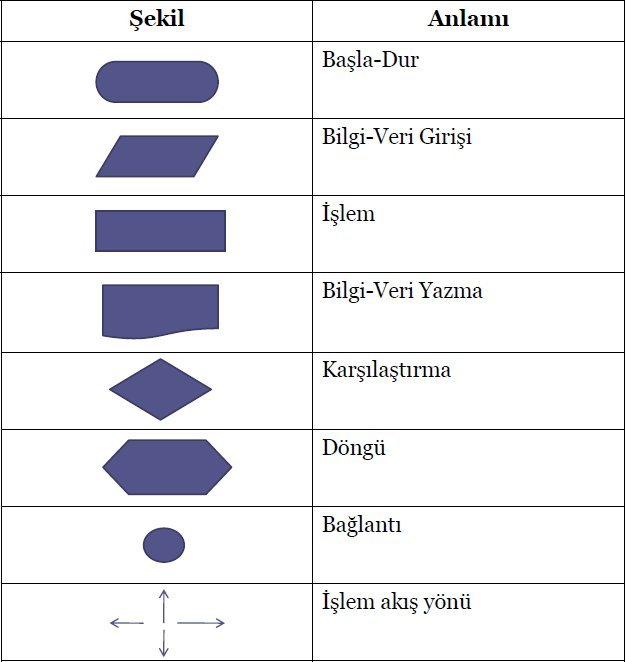
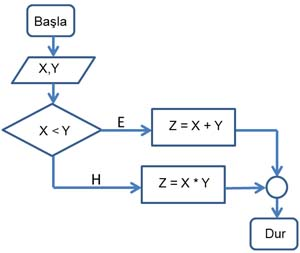

Basic Programming - Algoritms
FEF1002 - Lecture4
Algorithms
Let’s visualize algoritms
- Lightbot game online
- Play the guess the number game interactively.
- Khan Academy Binary Search
What is an Algorithm?
An algorithm is an ordered list of steps that must be followed to solve a specific problem or perform a specific task.
General Characteristics of Algorithms
- Precision: Each step must be defined clearly and precisely.
- Finiteness: The algorithm must end at a certain point and produce a result.
- Sequentiality: Steps must be applied in a specific order.
Problem Solving Steps
- Problem Definition: Problem definition is the clear expression of the problem that needs to be solved. In this step, the scope and objectives of the problem are determined.
- Determining Inputs and Outputs: In this step, the data to be used in solving the problem (inputs) and the results to be obtained (outputs) are determined. The relationship between inputs and outputs is defined.
- Developing Solution Methods: Multiple methods or ways can be developed to solve the problem. In this step, potential solutions are evaluated and the most appropriate one is selected.
- Algorithm Control and Improvement: The chosen solution is written as an algorithm and this algorithm is checked and necessary improvements are made. It is ensured that the algorithm works correctly.
- Coding the Algorithm: In this step, the developed algorithm is coded using a specific programming language. During coding, each step of the algorithm is converted into programming language.
- Code Control and Improvement: Testing the written code and fixing errors are done in this step. The performance and accuracy of the code are checked and necessary improvements are made.
Algorithm Steps
- Start
- Define variables: number1, number2, sum
- Get values for number1 and number2
- sum = number1 + number2
- Print sum value
- Stop
Simple Addition Operation with Python Code
Note: You can run the Python codes at this link
Get two numbers from the user and perform addition
number1 = int(input("Enter the first number: "))
number2 = int(input("Enter the second number: "))
sum = number1 + number2
print(sum)Flow Charts
What is a Flow Chart?
Flow charts are diagrams that visually represent the steps of an algorithm. Flow charts make the process flow and control structure more understandable.
Flow diagrams enable easy understanding, tracking, and control of the algorithm. Their disadvantage is that they can be very long in detailed algorithms.
The symbols used in flow diagrams and their meanings are shown in the image below.
Flow Chart Symbols and Usage
- Start/End: Oval shapes indicate the start and end points of the algorithm.
- Process: Rectangle shapes show process steps.
- Decision: Diamond shapes indicate conditional branching points.
- Input/Output: Parallelogram shapes show data input and output.
- Arrows: Indicate flow direction.

This image shows the meanings of shapes used in flow charts.
Example Flow Chart

This image shows a flow chart containing a decision structure.
Basic Coding for Programming
Variables and Data Types
Variables are areas used to store data in the program. Data types specify what kind of data the variables will store.
- number = 10 integer
- name = “Ali” string
- pi = 3.14 float
- is_true = True boolean
Basic Input/Output Operations
Operations used to get data from the user and print data to the screen.
Example: Input/Output Operations
name = input("Enter your name: ")
print("Hello", name)Mathematical Operations and Operators
| Python | R | |
|---|---|---|
| Equals | == | == |
| Less Than | < | < |
| Greater Than | > | > |
| Less Than or Equal | <= | <= |
| Greater Than or Equal | >= | >= |
| Not Equal | != | != |
R Mathematical Operations
a <- 5
b <- 3
#Addition
result_add <- a + b
print(result_add)
Output: 8
#Subtraction
result_sub <- a - b
print(result_sub)
Output: 2
#Multiplication
result_mul <- a * b
print(result_mul)
Output: 15
#Division
result_div <- a / b
print(result_div)
Output: 1.6666666666666667
#Modulus
result_mod <- a %% b
print(result_mod)
Output: 2
#Exponentiation
result_exp <- a ^ b
print(result_exp)
Output: 125Python
Note: You can run the Python codes at this link
#### Python Mathematical Operations
a = 5
b = 3
#Addition
print(a + b)#Subtraction
print(a - b)#Multiplication
print(a * b)#Division
print(a / b)#Modulus
print(a % b)Control Structures If-Else
Control structures allow the program to follow different paths based on certain conditions.
# Example: if-else Structure
number = int(input("Enter a number: "))
if number % 2 == 0:
print("Number is even")
else:
print("Number is odd")# Example: if-else Structure (giving 5)
number = 5
if number % 2 == 0:
print("Number is even")
else:
print("Number is odd")# Example: if-else Structure (giving 6)
number = 6
if number % 2 == 0:
print("Number is even")
else:
print("Number is odd")a = 5
b = 10
if (a > b):
print("a is greater than b")
else:
print("a is less than or equal to b")Logical Operators: and, or, not
Logical operators allow multiple conditions to be evaluated together.
# Example: Logical Operators
a = True
b = False
print(a and b)
print(a or b)
print(not a)Logical operators allow multiple conditions to be evaluated together. True value is evaluated as 1, False value is evaluated as 0.
# Logical operators with values 1 and 0
a = 1
b = 0
print(a and b) # Output: 0 (False)
print(a or b) # Output: 1 (True)
print(not a) # Output: FalseLoops: for and while
Loops allow a specific operation to be repeated.
# Example: for Loop
for i in range(5):
print("Hello World")# Example: while Loop
i = 0
while i < 5:
print("Hello World") #Prints Hello World 5 times on separate lines
i += 1# for Loop
for i in range(1, 6):
print(i)# while Loop
i = 1
while i <= 5:
print(i)
i += 1References
- C Programming Language (For Beginners) - Dr. Selçuk Alp, Arzu Kilitci, Umuttepe Publications
- https://byildirim.wordpress.com/2012/04/01/algoritmanin-temeli-sayilan-akis-semalari/
- https://www.robotiksistem.com/akis_diyagramlari_flowchart.html